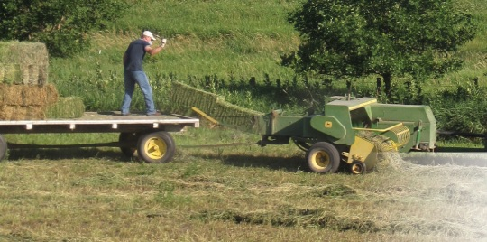
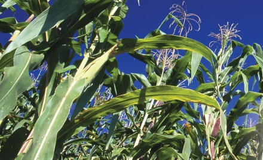
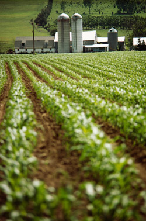
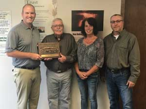

Active farmers
We have agents who are active farmers and understand your needs. Jeff has farmed with his dad for the last 30 years.
Pocahontas, Iowa · Iowa & surrounding states
Bob and Jeff Johnson run a full-time, specialized crop and hail insurance agency. We farm too, so we use the products we sell and know what your operation is up against.
Why farmers call us
We have agents who are active farmers and understand your needs. Jeff has farmed with his dad for the last 30 years.
Our office staff is specialized in crop and hail insurance, so we stay on top of the latest and most critical changes in programs and regulations.
We pride ourselves on how quickly our adjusters are able to get to our customers and take care of their claims when the need arises.
Coverage
Hail is the one catastrophe most likely to destroy part of a crop and leave the rest looking fine. That damage may never reach your crop insurance deductible. We help you build a plan that fills the gap.
All coverage details


“Bob has believed that his farmers always come first and prides himself in providing the best service available.”
From the agency's staff page
Our staff
Agent / Owner · Certified Crop Insurance & Advisors
Bob has been selling crop insurance since 1983 and started the Bob Johnson Agency in Pocahontas in 1992. He is licensed in Iowa, Illinois, Minnesota and South Dakota, and has been active in farming since 1963.
Agent / Owner · Certified Crop Insurance & Advisors
Jeff has been with the agency since 1994. Before that he was a Federal Crop and Hail Adjuster for 8 years. He lives on a farm between Albert City and Pocahontas and has farmed with his dad for the last 30 years.
Office Manager · Agent
Val joined the agency in November 2011 with 20 years of management experience. She grew up on a farm, farms with her husband Dustin and lives in Pomeroy, so she understands your needs.

Recognition
Farmers Mutual Hail Insurance Company recognized Bob Johnson Agency as a top-producing crop insurance agency. The agency was 3rd in the state of Iowa for combined Multi-Peril Crop Insurance and crop-hail premium in 2016.
Award announced July 10, 2017.
Commonly asked
The answers vary with each operation, so call us about yours. These are the dates and rules every policyholder should know.
Acreage reporting is set for July 15. Acreage reporting is your responsibility, and doing it right will save you money. Always get a copy of your report right after signing and filing it with your agent, and keep it with your records.
The billing date for premium payments is August 15. The date is set by RMA and applies to every company writing crop insurance.
Report crop damage to your agent within 72 hours of discovery. Never put damaged acreage to another use without prior written consent of the insurance adjuster, so you don't destroy evidence of a possible claim.
The part hail takes out may be less than the deductible of your Multiple Peril Crop Insurance policy, or it may not lower your yield enough for a revenue policy to kick in. Crop-hail insurance gives you acre-by-acre protection that can be up to the actual cash value of the crop.
No. Buyers of MPCI policies and their agents both sign an Anti-Rebating Certification Statement on the insurance forms, certifying that they are not receiving or providing any form of rebate. Read more.
No. Call 712.335.3135 or toll free 800.383.8402, or stop in at the office on Highway 3 West in Pocahontas.
Contact
What challenges are you thinking about most right now? We would like to know.